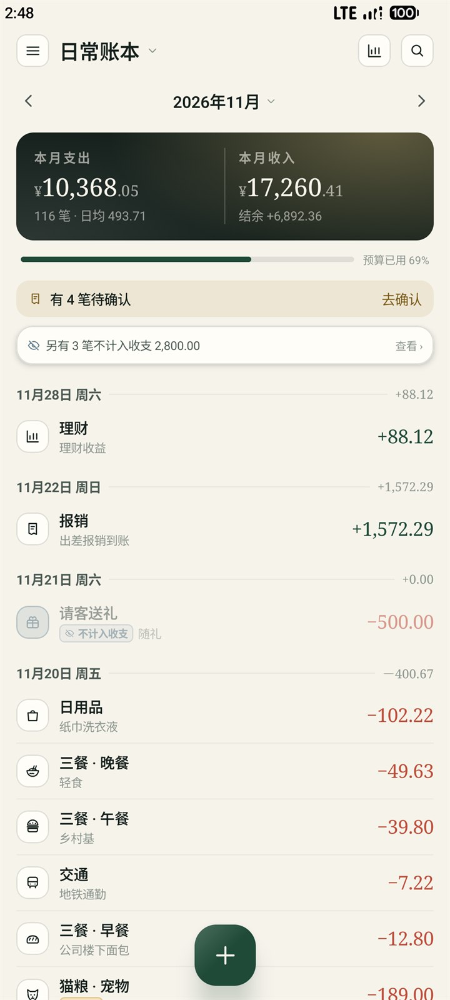
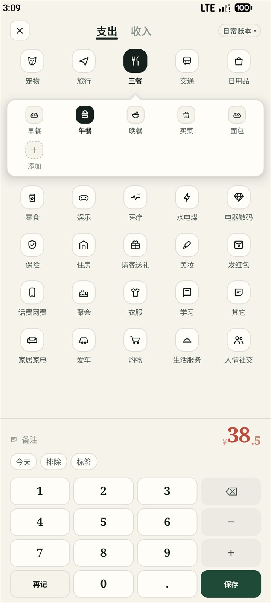
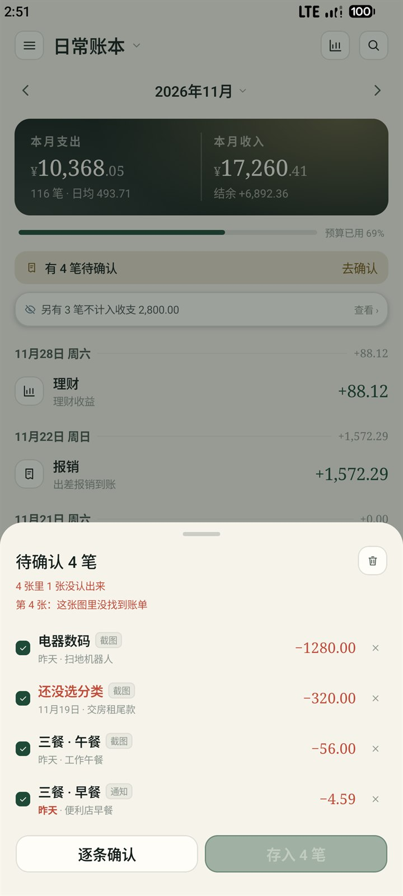
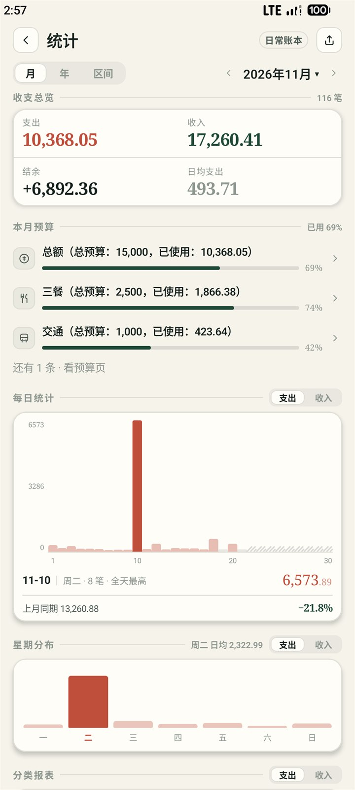
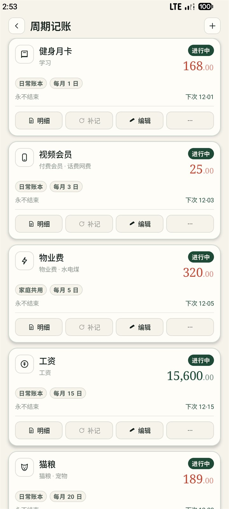
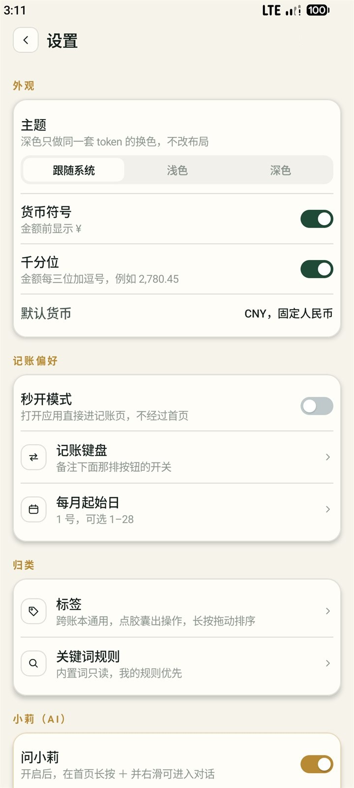

使用指南
按页面和操作讲清楚：每个功能是什么、在哪儿打开、点完会发生什么。第一次打开从「三分钟上手」开始，后面按需查。
第一次使用
先建账本，再记第一笔直接打开 App 就能用。默认会准备好「日常账本」和一套常用分类，不用先注册，也不用先连服务器。
旧账可以从模板、钱迹或支付宝账单导入；如果你之前用过塔莉，也可以恢复 .tally 备份包。
顶部切月份和账本，中间看本月汇总与预算，下面按天列账单；待确认草稿会显示在预算条下面。
底部中间的 ＋ 是记账；左上角抽屉放账本、分类、统计、搜索、设置等低频入口；右上角放大镜直接搜索。

首页与六种记法
手打、语音、识图、分享、通知、问小莉选支出或收入、选分类、输金额，然后保存。日期、备注、标签、图片、账单时间、标记不计入都在同一页；部分按钮可在记账键盘设置里显隐。
键盘上的 ＋、− 会参与计算，例如输入 18+12，保存时按 30 记。这样不用另外拿计算器。
直接点 ＋ 是手打；长按后上滑语音、左滑识图、右滑问小莉。塔莉速记从系统分享进入，付款通知开启后自动进待确认。
点首页任意账单看详情；「修改」会带着原数据回记账页。删除先进入回收站，没到期之前还能恢复。
开启秒开模式后，App 打开就落在记账页；保存一笔后回到首页，适合一天里连续补账。

语音、识图与通知
机器先认，你再确认长按 ＋ 上滑，按住说完松手。松手后先出草稿卡，点存入才落账；返回或取消不会写进账本。
长按 ＋ 左滑，从相册一次最多选 9 张。本机先 OCR 和规则匹配，缺字段时再按设置决定是否用 AI 提取。
在相册或文件 App 里选图，点系统分享中的「塔莉速记」。识别结果会回到首页待确认清单，超 9 张只收前 9 张。
设置 → 自动记账 → 通知抓取打开后，按内容筛支付通知；金额和商户能认出来的进待确认卡。通知原文不落盘、不进日志。
通知抓取需要通知使用权；悬浮提醒需要悬浮窗权限；自动记账页的「权限与检查」会列出真实状态和跳转入口。

待确认与关键词
所有自动入口共用一张卡语音、识图、分享、通知的草稿都汇到这张卡。缺分类的行标红置顶且不能存；点任意一行进记账页修改。
勾选完整的行后点存入；不勾的行会保留。多张图的批次可以逐条改完再逐条存，全部处理完卡片自动关。
没确认完就退出、切后台或被系统杀掉，草稿不会丢。下次打开首页，预算条下面出现「待确认 N 笔」，点开继续。
通知抓来的草稿 30 天没人处理会自动退出清单；手动识别来的行不受影响。
设置 → 归类 → 关键词规则。语音或识图保存后，符合规则的备注会静默沉淀；下次先命中你自己的规则，命中了就不必打扰 AI。
美团下单、支付宝付款可能推来两条通知。系统会按订单号、同渠道、同金额与时间窗口合并，先到的留下，后到的只补空字段。

账本与分类
各记各的，也能合起来看左上角抽屉 → 我的账本：新建、改名、换图标、排序、归档、删除。首页顶部账本名负责切换当前账本。
记账页顶部显示的账本就是当前落点。长按 ＋ 记的账默认进这里，除非当场换一个。
首页和统计的账本选择里有「全部账本」，选它看总账；预算仍按各本自己的进度算。
分类是全机共用的一套两级树，不随账本重复建。一级长按拖动排序，二级在展开那排点选。
还有账单的分类不能直接删，要先选去处：并进另一个分类，或留在「其它」，不会把账单一起删掉。

查账、统计与批量
钱花到哪里去了首页点月份两侧箭头翻月，点月份文字打开年月选择器。右上角放大镜进搜索。
关键词和收支类型直接填；时间、账本、来源、标签、金额区间、排序收在更多筛选里。合计算全部命中，列表先列一部分避免卡顿。
抽屉 → 统计，切月、年或自定义区间。收支总览、每日统计、星期分布、分类报表、日报表逐段看；点图例可联动明细。
长按任意一行进选择态，可一次改分类、打标签、改日期和备注、报销、不计入、删除、移至账本。
标签跨账本通用：记账页挂标，搜索按标筛，批量补标，还有标签详情页集中看同一标签的账。
删除是软删，按删除日分组。可保留 7 / 30 / 90 天或永不清理，到期才真正删除。

周期、分期与预算
提前安排好的账房租、订阅、工资设一次，到点自动生成。错过的期数不静默补，页顶提示后点「全部补记」才入账。
把一笔大额拆成多期。末期会自动吃掉分币尾差，合计始终等于原始总额。
支持 LPR±BP、等额本息与等额本金。利率可改，金额、期数和首期入账日锁死，避免算乱。
按月或按年设总额，也能细到分类；阈值默认 80%，可自动续期。首页进度条来自这里。
当日未记账、周期到期、分期到期、执行失败四类提醒各自可关，只承诺当天之内提醒。

问小莉与 AI 提取
对话和自动记账是两件事设置 → 问小莉打开，再配好服务商。长按 ＋ 右滑进入对话，能打字、说话、发图；她给出的账仍要你点确认才入账。
设置 → 自动记账里按入口分开：语音、识图、塔莉速记、通知补全等。默认全关，开着且本机规则缺金额或缺分类时才补字段。
自动记账只把脱敏后的文字发给服务商，不让 AI 接触原图；AI 失败或超时就退回本机规则结果，不影响出草稿。
提示词里会带上你自己的关键词规则和分类短名。你自己的规则优先，AI 只在规则认不出时补建议。
设置 → 小莉 AI → 服务商配置。未配置时 AI 相关开关不能打开；配置只保存在本机，不进备份包。
六种记法里，手打直接落账；语音、识图、塔莉速记、付款通知和问小莉都先出草稿或账单卡，再等你确认。

导入导出与备份
数据都在本机设置 → 数据 → 导入账单：模板、钱迹、支付宝三种格式，预览异常行后选目标账本，重复行默认跳过。
导出 14 列 CSV 或 XLSX 到「下载 / Tally」，能原样导回；标记与图片引用都在列里。
旧机生成加密 .tally 包，可含图片；新机从备份恢复。WebDAV 只做手动快照，不后台同步。
统计和账本概览可生成长图，支持一键脱敏，直接分享或保存到「下载 / Tally」。
API Key、WebDAV 密码和偏好设置不进备份包，恢复后要重新填。
设置 → 关于 → 导出诊断包：版本、机型、表行数、日志尾巴；不含金额、备注、分类名和 API Key。

设置
按分组找，低频但重要在最上面：主题、货币符号、千分位、默认货币、账单时间精度；跟随系统或强制浅色 / 深色。
控制记账页按钮显隐，以及「账单图片」和「识别时保留原图」。主开关关掉后，识别草稿就不存来源图。
分类管理、标签管理、关键词规则。自动沉淀和手动添加的规则都在这里改或删。
支付页确认、通知抓取、监听应用、权限与检查，以及按入口拆开的 AI 提取开关。
导入导出、备份恢复、WebDAV 快照、回收站。所有数据默认留在本机。
版本、诊断包、开源许可和反馈入口。

常见问题
先查这里，再导出诊断包这是设计如此。机器识别只生成草稿，必须有人在确认卡或记账页点存入；不确认就不进账本。
先去服务商配置填好并测试连接；没配好时会提示并跳配置页。基础规则识别不依赖 AI。
检查通知使用权、通知抓取开关、监听应用里对应 App 是否打开。推广、汇总、无金额的通知会被过滤。
需要系统悬浮窗权限；没有权限时不会强行弹窗，打开 App 仍能看到首页待确认入口。
先看是否开启了「不计入收支」，再看统计页是否开了「剔除未报销」；口径写在官网首页「每个数字怎么算」。
设置 → 关于 → 导出诊断包，附上操作步骤和发生时间。诊断包不含金额、备注、分类名或 API Key。
还没装上？回到首页下载 APK。